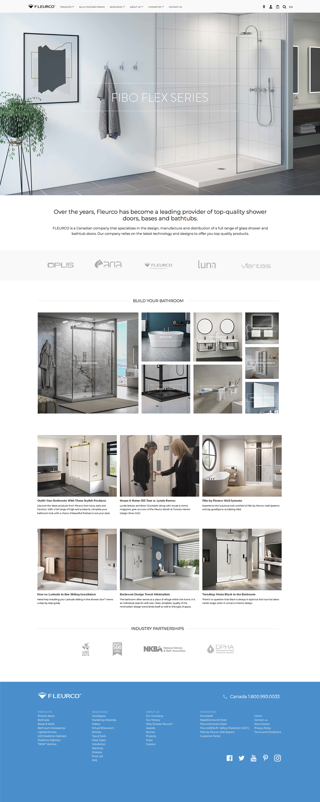

Fleurco specializes in the design, manufacturing and distribution of a full range of high-end glass shower doors, bathtubs, lighted mirrors and accessories.
We refreshed the look of the site to showcase a greater range of products with higher quality imagery. We also enhanced product discoverability in the catalog with a refined user experience featuring greater flexibility in both search and filtering.
